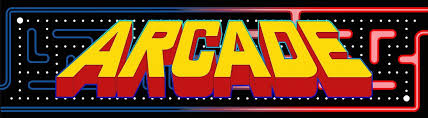
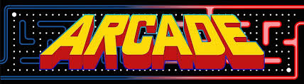

A brief history of arcade machines
Arcade machines began in the early 20th century with mechanical games like pinball. In the late 1970s, video arcade games appeared, with one of the first being Pong in 1972. It was a simple ping pong game where a dot bounced between two lines on a screen. The late 70s and early 80s became known as the golden age of arcade machines, with games like Donkey Kong and Pac-Man becoming popular.
Arcades became really popular among kids, teens, and young adults. They were mostly found in malls and amusement parks. In the 1990s, fighting games like Street Fighter and Mortal Kombat became extremely popular and brought a resurgence of new players, but this was mostly futile as the rise of home consoles slowly killed the arcade market. Arcades and arcade machines still exist today, often appealing to nostalgia or providing a gameplay experience you can’t get at home, such as Dance Dance Revolution or racing simulators.